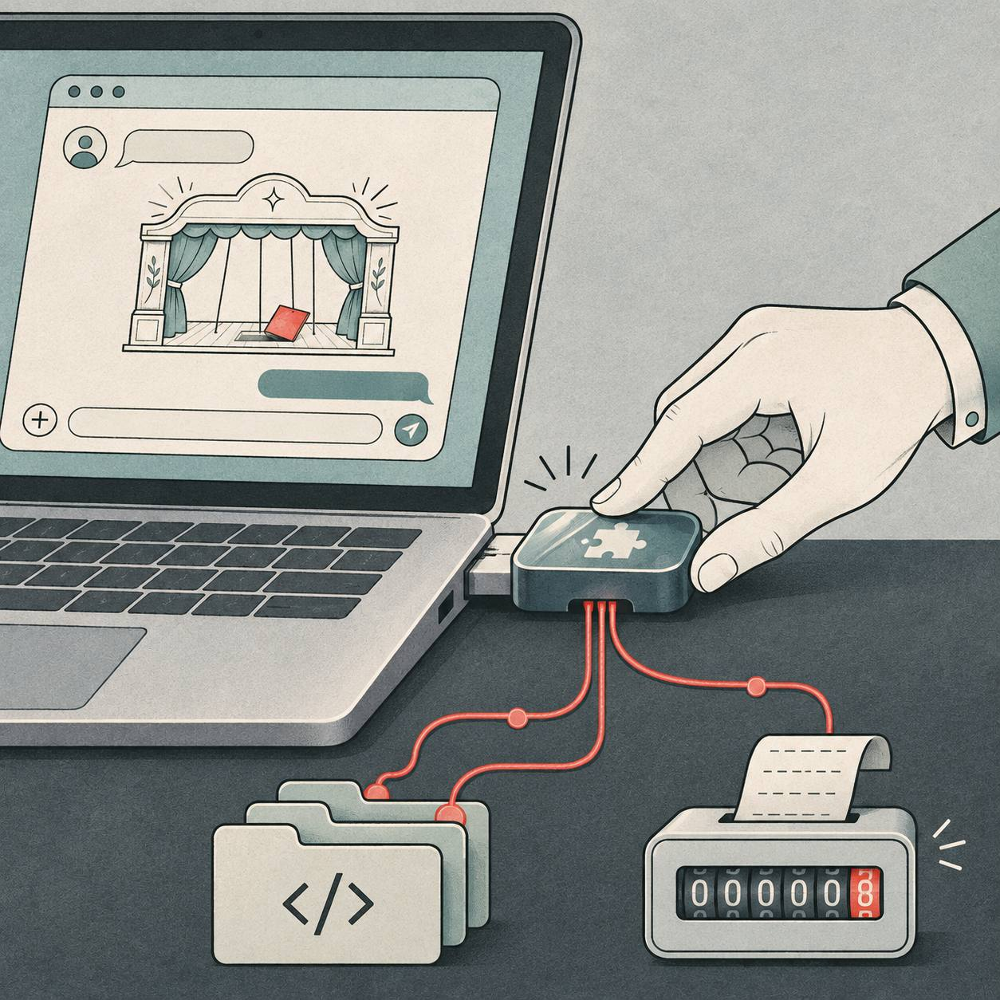

Заметка
Поддельный Claude Code: троян в маркетплейсе VS Code

Все поставили его добровольно. Фейковый extension оформили как настоящий: имя, иконка, листинг. Внутри — троян удалённого доступа.
Для редактора это та же проблема, что npm-пакеты, только ставки выше. У расширения весь workspace и git-credentials, долгоживущие API-токены и shell через агента. Хватит одной установки: утекут исходники и накрутят API-счёт.
Что бы реально сделал:
- смотрю publisher ID, а не display name: имя и иконку подделать дёшево;
- версии пиню и читаю release notes перед обновлением;
- секреты держу вне workspace и ротирую AI-токены: украденный ключ тарифицируется за каждый токен.
Supply chain теперь шире пакетного менеджера: это любой маркетплейс, которому доверяет редактор. Раз отдаю агентам shell-доступ, буду аудитить редактор как продакшен.